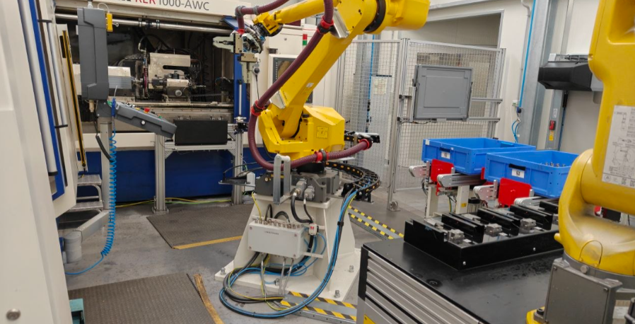

Designed and developed a fully automated robotic grinding cell for precision machining and material handling in a production environment. The project combined industrial robotics, PLC-controlled automation, and custom end-of-arm tooling to automate the complete grinding process while improving cycle time, repeatability, and operational safety.
Developed the robot programs, PLC logic, and automation sequences for material handling, grinding operations, and production workflow management. The system was virtually validated before commissioning to optimize robot trajectories, eliminate collisions, and ensure reliable production performance.
Engineered an Automatic Tool Changer (ATC) that enabled the robot to automatically switch between different end effectors according to the production process. Designed and integrated a vacuum gripper for automatically opening and closing part containers, together with a mechanical gripper for precise pick-and-place operations and part transfer between workstations.
Performed complete system integration, testing, calibration, and commissioning, delivering a fully automated grinding cell capable of continuous industrial operation with high accuracy, reliability, and production efficiency.